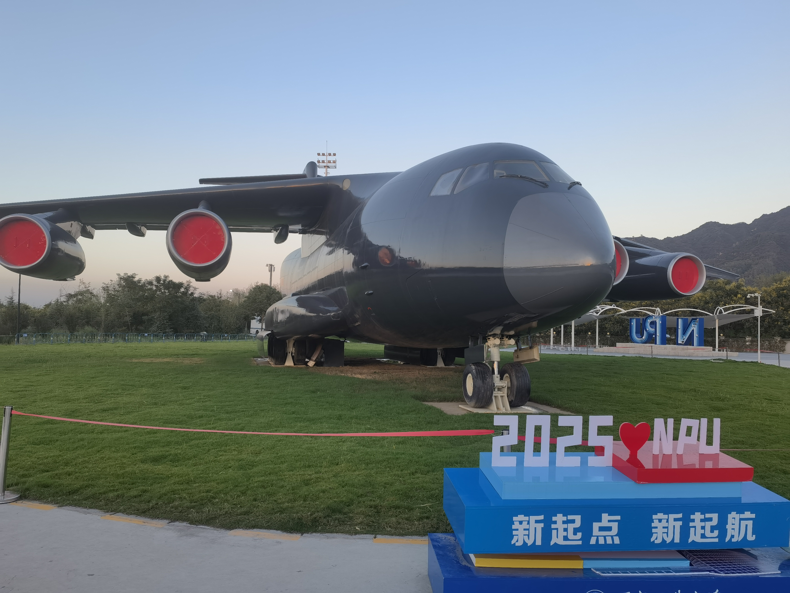
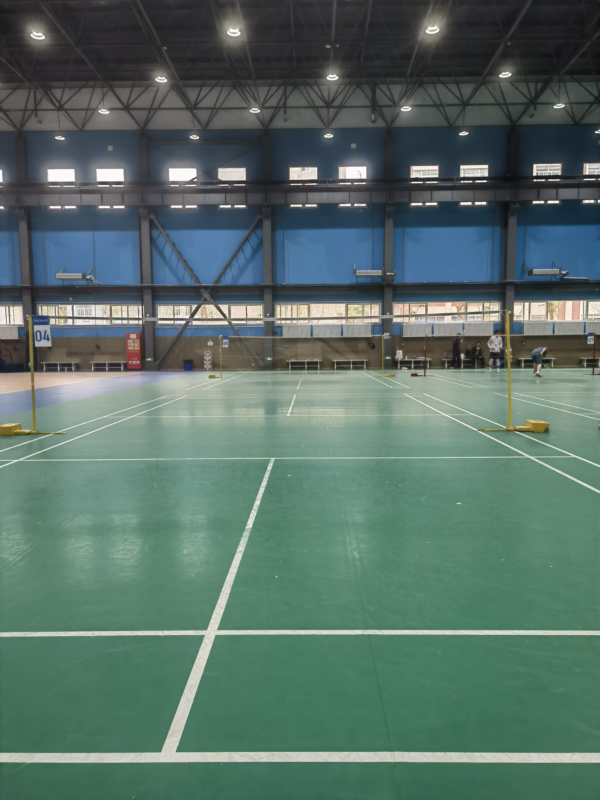
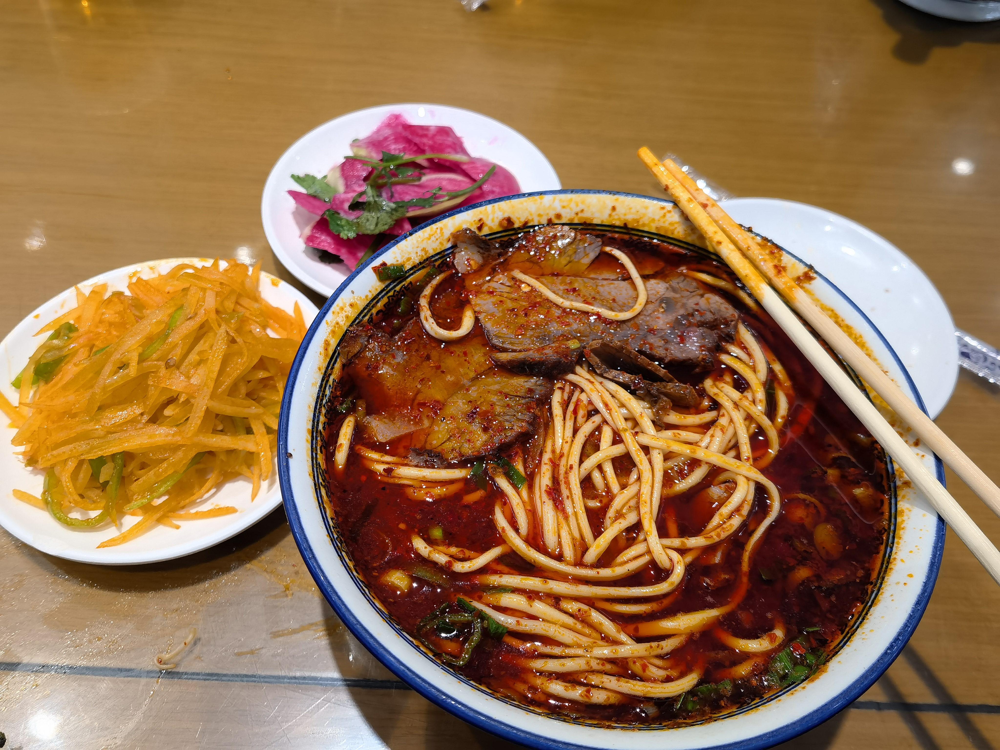
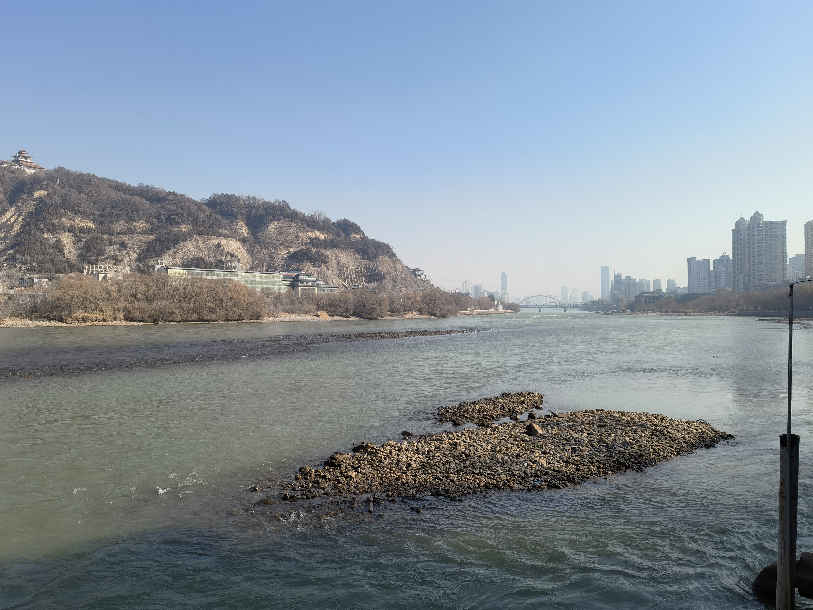
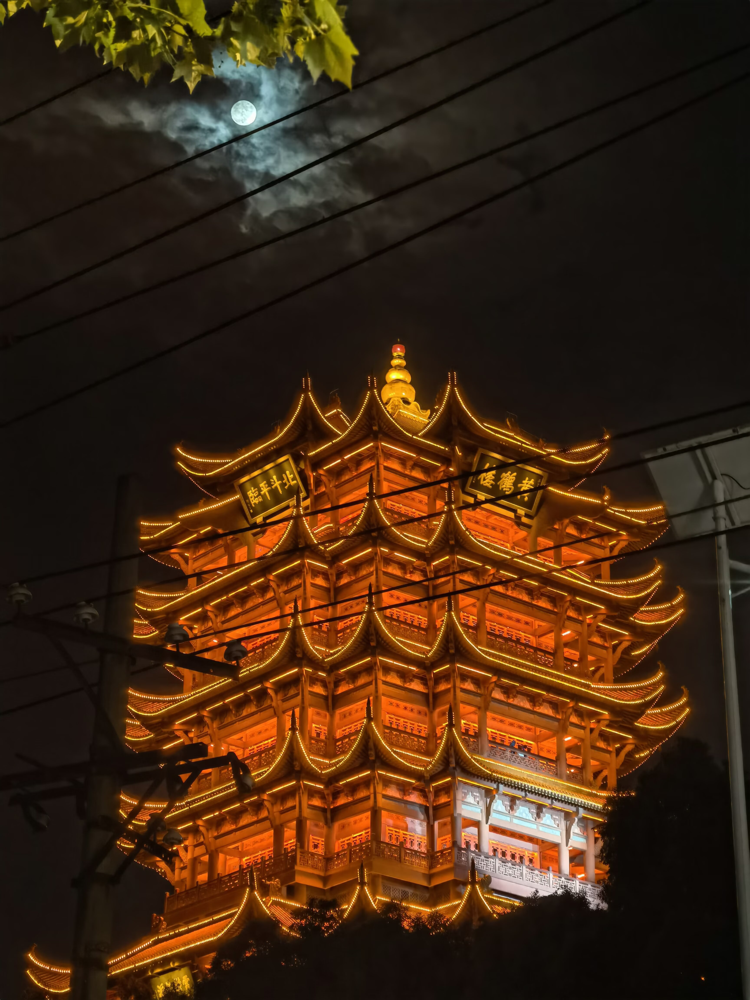
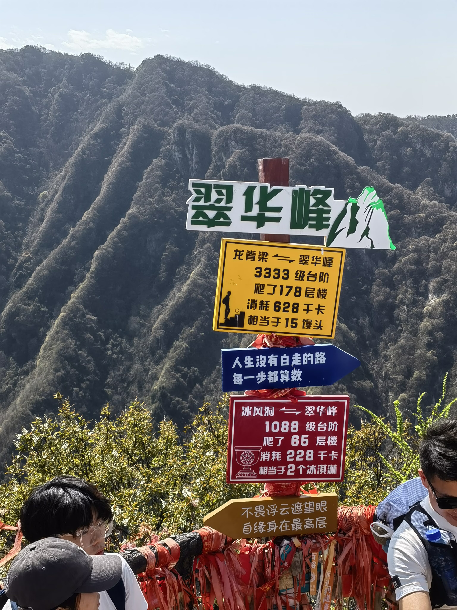
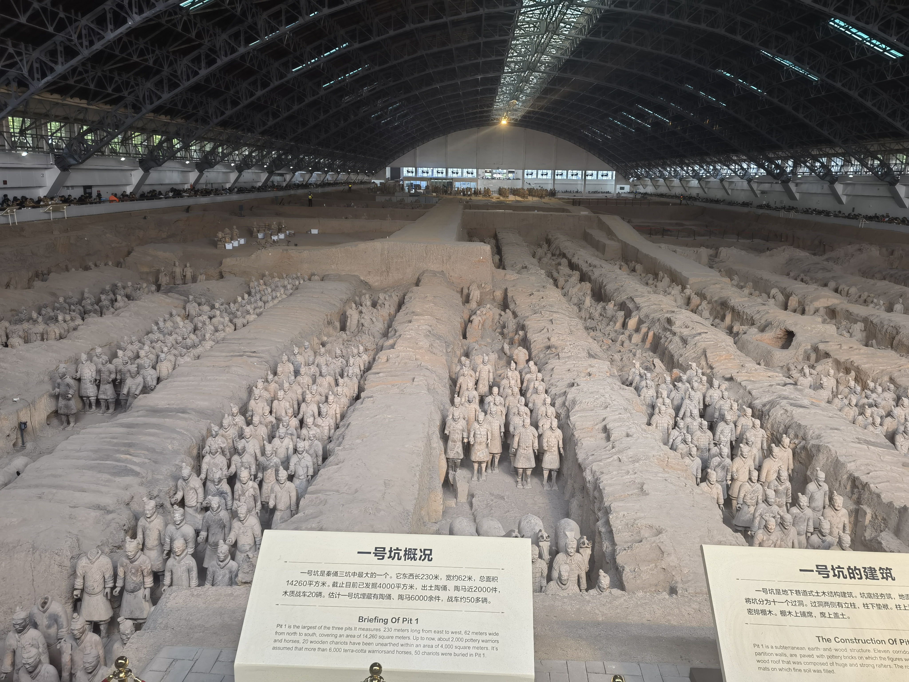
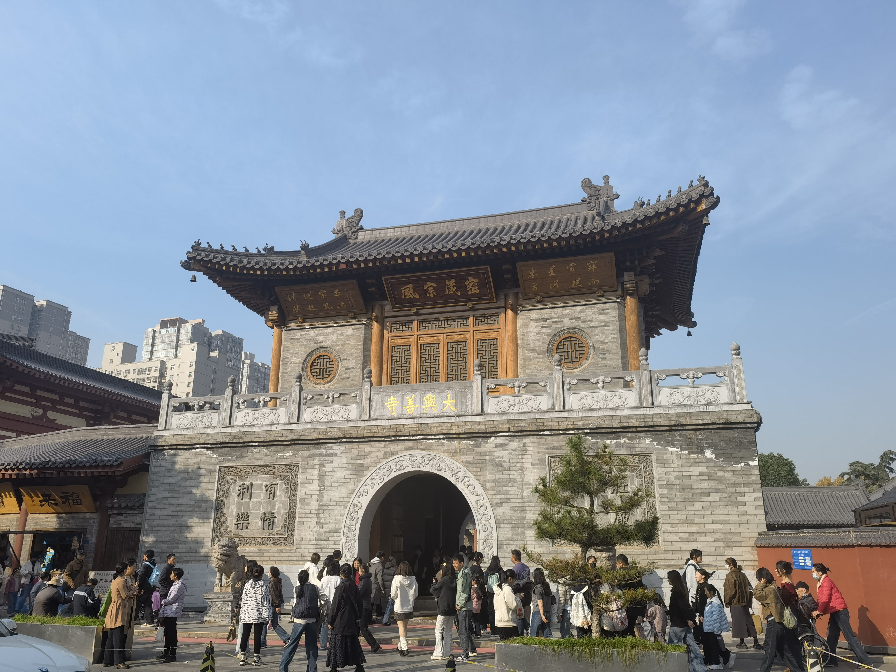

相比与其他人的研究生活，我的生活还是相对清闲的，没有发论文的压力，没有组会，更没有人push，可以说是想干什么就干什么。我的生活主要围绕着课程、项目、旅游等方面展开。
初见校园
准确地来说，这并不是我第一次与西工大见面，可以参考我的推免经验贴。但是毕竟过去了一年，校园内外还是发生了一些变化，而且上一次我没有找到飞机场。

总的来说，这给我的第一感觉还是偏僻，我曾不止一次感叹：回家最远的距离不是西安到邯郸，而是东大村到西安北；其次是面积大，这个我想不用解释了；然后是相对齐全的娱乐设施，校内有操场、羽毛球场、健身房，先不说设备的质量如何，这相比于我那垃圾的本科学校，我已经很满足了。有着相对健全的设施，还有着相对充裕的时间，我渐渐养成了健身的习惯，也捡回了打羽毛球的快乐。

课程资料
项目
不同于其他课题组以学术为主，我的课题组以项目为主，项目的时间占据了我这一年的80%的时间。干项目最大的感受就是烦人，从初期的写文档到后期的写代码，没有一个环节是令人愉快的。而且还有一个大家都会遇到的问题——不断地修改，每次提交一版之后，领导一定会提出修改意见，然后就是不同程度的修改，不过这种情况之前已经遇到好几次了，所以我早就习惯了。
失去
这一年我失去了两个东西，一个是陪了我7年的水杯碎掉了，另一个是陪了我8年的雨伞被征用了。我想这应该是上天的某种暗示，人不能总是执着于过去，该来的总会来，该走的总会走。更何况这东西除了我自己没有人在意。
旅游
这一年去了不少地方。去兰州看望崔神，品尝正宗的兰州牛肉面，看一看不是黄色的黄河。


去武汉看望Mr.Black，交流这一年发生的事情。

以及在西安本地随便转一转。



但是我最想去的陕历博至今没有去，因为根本预约不上，希望以后有机会吧。